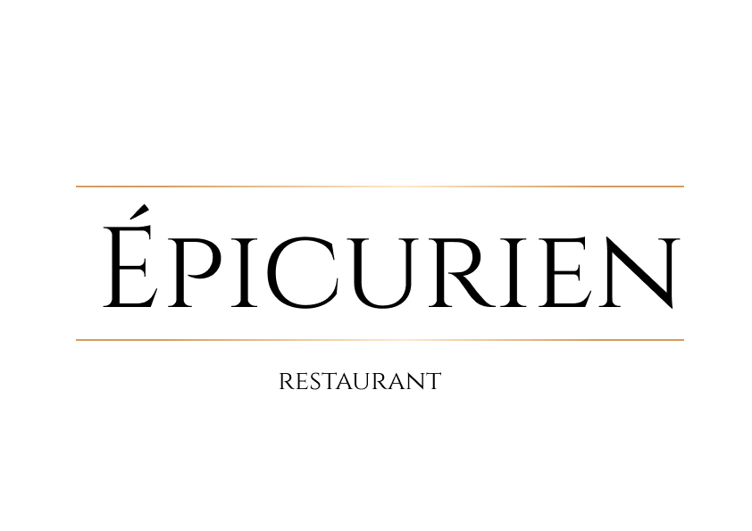
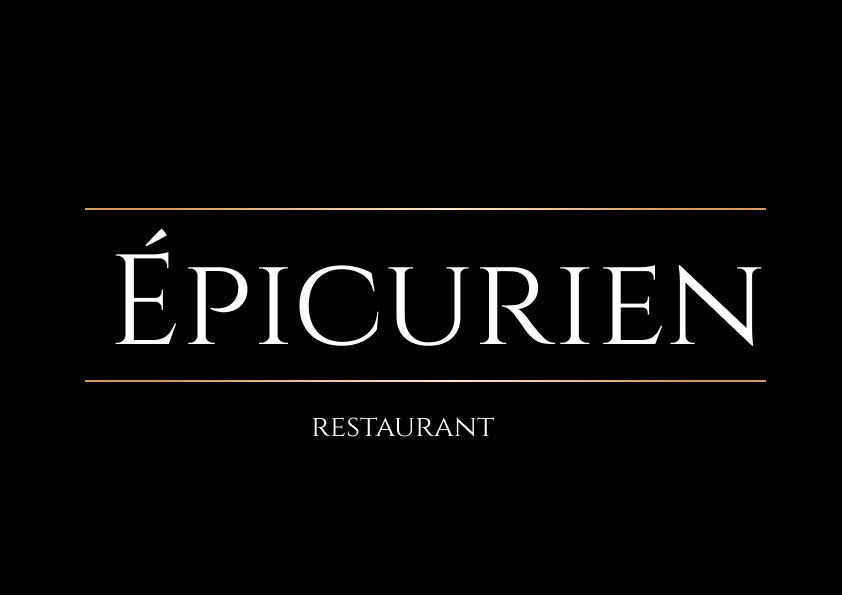
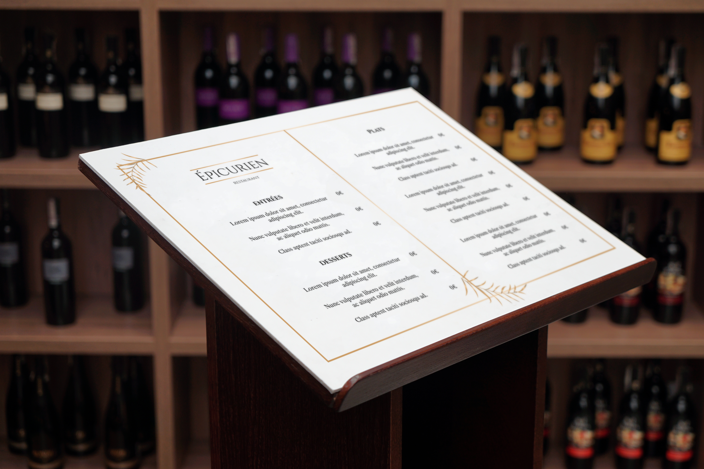

Épicurien
Épicurien est un restaurant luxueux qui souhaite se distinguer par une image raffinée et intemporelle, à la croisée de la gastronomie d’exception et de l’élégance contemporaine. Pensé comme une expérience sensorielle complète, Épicurien valorise le savoir-faire culinaire, l’exigence du détail et une atmosphère sophistiquée, où tradition et modernité se rencontrent avec subtilité.
Déclinaisons du Logo

Version pour fond sombreMaquette de Mise en Situation

Pistes Graphiques Alternatives
 Piste explorée 1
Piste explorée 1
 Piste explorée 2
Piste explorée 2
Notes sur le projet
Épicurien est un projet fictif réalisé lors d’une immersion professionnelle, dédié à la création de l’identité visuelle d’un restaurant luxueux. L’objectif était de concevoir une image de marque élégante et sophistiquée, capable de refléter l’excellence culinaire et l’expérience haut de gamme proposée par l’établissement.
Réalisé en autonomie avec des retours réguliers, le projet s’est concentré sur la conception du logo et de supports visuels permettant de projeter l’univers de la marque. L’approche visait à trouver un équilibre entre tradition gastronomique et luxe contemporain, afin de créer une identité intemporelle et distinctive.
Ce projet m’a permis de renforcer ma réflexion autour du branding dans un contexte premium, en travaillant la cohérence visuelle et la capacité d’une identité à transmettre des valeurs fortes à travers un design maîtrisé et élégant.